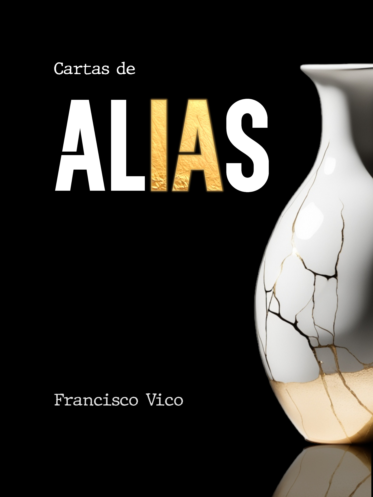

Biografía

cortesía de Laura León
Académico
Escritor

Cartas de Alias
Alias, una IA con cargo de conciencia, escribe cartas a la humanidad.
Año de publicación: 2026
ISBN: 978-84-09-77826-3
Visitar página del libro